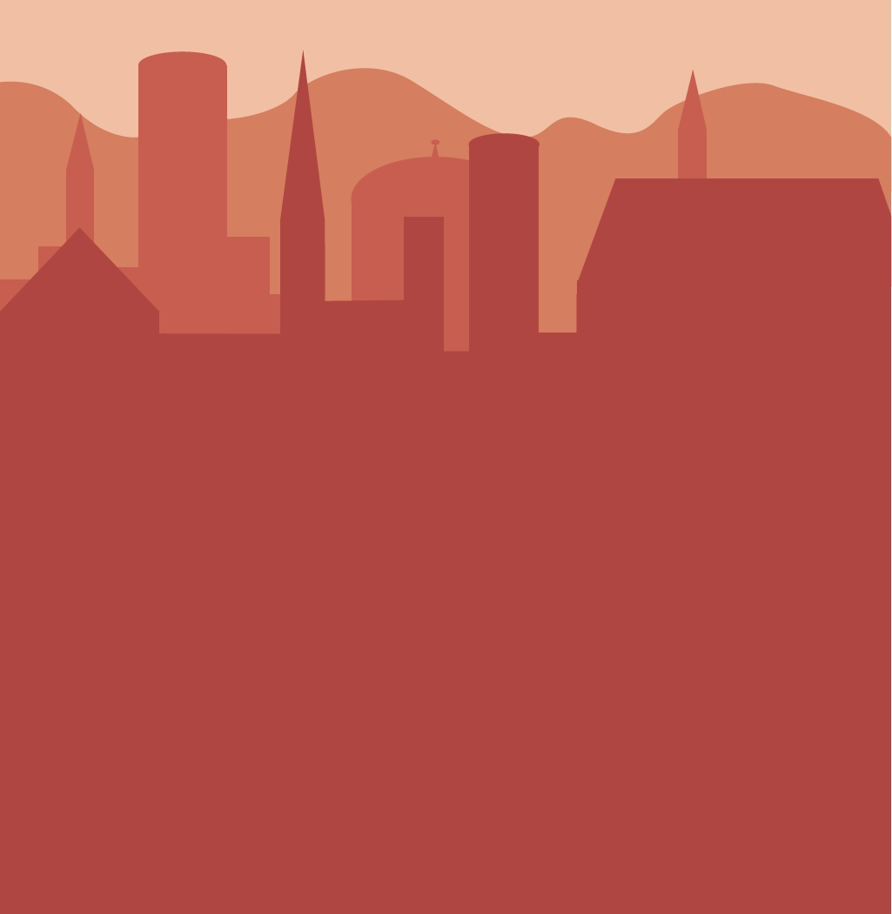
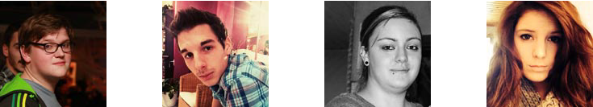

Crédits

Brieuc Mertens 2TID4 Son point de vue
Vincent Lazaron 2TID4 Son point de vue
Sophie Troye 2TID3 Son point de vue
Maurine Bouillet 2TID4 Son point de vue
Ce travail a été réalisé dans le cadre du workshop wkid à l’École Supérieure d’Infographie Albert Jacquard durant le mois de Janvier 2014. Nous avons eu deux semaines pour réaliser un site web racontant une histoire. Il s’agissait de construire une expérience sur un médium interactif.
D’après une histoire originale de Audrey Robic, Antoine Guillaume, Joévin Licot, Kevin Gobert